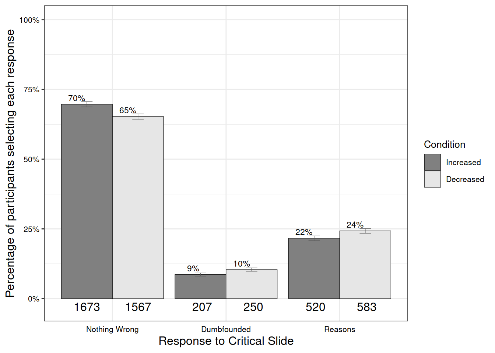

Sample and Simulated Data
Temporal Distancing and Dumbfounding
Overview of Judgments
Three thousand Four hundred forty Eight participants (71.83%) rated the behavior of Julie and Mark as wrong initially, and three thousand two hundred Forty four participants (67.58%) rated the behavior as wrong at the end of the task. There was a significant difference between initial ratings (M = 3.2, SD = 1.3) and revised ratings (M = 3.4, SD = 1.4), t(4799) = -5.1, p < .001, d = 0.07.
Distancing and Judgments Made
There was no difference in initial judgement depending on distance manipulation: F(2, 4797) = 0.18, p = .837 \(\eta\)p2 = 0, (Mincreased = 3.2, SDincreased = 1.3, Mdecreased = 3.3, SDdecreased = 1.3, Mcontrol = 3.2, SDcontrol = 1.3). There was no difference in revised judgement depending on distance manipulation: F(2, 4797) = 0.93, p = .393, \(\eta\)p2 = 0, (Mincreased = 3.4, SDincreased = 1.4, Mdecreased = 3.4, SDdecreased = 1.4, Mcontrol = 3.4, SDcontrol = 1.4).
Distancing and Reason-Giving/Dumbfounding
There was a significant association between temporal distance condition and response to the critical slide, \(\chi\)2(4, N = 4800) = 104.133, p < .001, V = 0.15, the observed power was 1. The responses to the critical slide for the increased distance group (N = 1600) the decreased distance group (N = 1600), and the control group (N = 1600) are displayed in {apafg-tempoverall}.
(#tab:TempResiduals)
Observed counts, expected counts, and standardised residuals for each response to the critical slide depending on temporal distancing
| Control | Increased | Decreased | ||
|---|---|---|---|---|
| Observed count | Reasons | 1134 | 1097 | 1002 |
| Dumbfounded | 223 | 112 | 160 | |
| Nothing Wrong | 243 | 391 | 438 | |
| Expected count | Reasons | 1077.67 | 1077.67 | 1077.67 |
| Dumbfounded | 165 | 165 | 165 | |
| Nothing Wrong | 357.33 | 357.33 | 357.33 | |
| Standardised residuals | Reasons | 3.68** | 1.26 | -4.94** |
| Dumbfounded | 5.84** | -5.34** | -0.5 | |
| Nothing Wrong | -8.41** | 2.48* | 5.93** |
Note. * = sig. at < .05; ** = sig. at < .001
Psychological Distancing and Dumbfounding

Overview of Judgments
Three thousand Four hundred forty Eight participants (71.83%) rated the behavior of Julie and Mark as wrong initially, and three thousand two hundred Forty four participants (67.58%) rated the behavior as wrong at the end of the task. There was a significant difference between initial ratings (M = 3.2, SD = 1.3) and revised ratings (M = 3.4, SD = 1.4), t(4799) = -5.1, p < .001, d = 0.07.
Distancing and Judgments Made
There was no difference in initial judgement depending on distance manipulation: t(4796.21) = 1.04, p = .296, d = 0.03, (Mincreased = 3.3, SDincreased = 1.3, Mdecreased = 3.2, SDdecreased = 1.3). There was no difference in revised judgement depending on distance manipulation: t(4793.43) = 0.01, p = .994, d = 0, (Mincreased = 3.4, SDincreased = 1.4, Mdecreased = 3.4, SDdecreased = 1.4).
Distancing and Reason-Giving/Dumbfounding
There was a significant association between temporal distance condition and response to the critical slide, \(\chi\)2(2, N = 4800) = 29.804, p < .001, V = 0.08, the observed power was 1. The responses to the critical slide for the increased distance group (N = 2400) and the decreased distance group (N = 2400) are displayed in {apafg-psychoverall}.
(#tab:PsychResiduals)
Observed counts, expected counts, and standardised residuals for each response to the critical slide depending on psychological distancing
| Increased | Decreased | ||
|---|---|---|---|
| Observed count | Reasons | 1697 | 1536 |
| Dumbfounded | 201 | 294 | |
| Nothing Wrong | 502 | 570 | |
| Expected count | Reasons | 1616.5 | 1616.5 |
| Dumbfounded | 247.5 | 247.5 | |
| Nothing Wrong | 536 | 536 | |
| Standardised residuals | Reasons | 4.96** | -4.96** |
| Dumbfounded | -4.41** | 4.41** | |
| Nothing Wrong | -2.36* | 2.36* |
Note. * = sig. at < .05; ** = sig. at < .001
Distancing and Dumbfounding
Overall the model significantly predicted responses to the critical slide \(\chi\)2(10, N = 4800) = 157.94, p < .001, The observed power was 1. The model explained between 1.09% (Cox and Snell R square) and 2.55% (Nadelkerke R squared) of the variance in responses to the critical slide. For scenarios in the future, participants were more likely to provide reasons than to present as dumbfounded Wald = -8.39, p < .001, odds ratio = 0.44, 95% CI [0.3, 0.65].